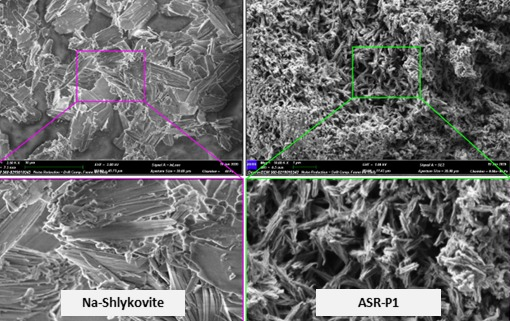

Å → mm
Alkali–silica reaction
The alkali–silica reaction forms layered silicate products whose growth in confined pores damages concrete. We build atomic models of crystalline ASR products (shlykovite, kanemite, magadiite and related phases), derive their thermodynamic and thermoelastic data, and use them in phase diagrams and micromechanical estimates of crystallization pressure. Synthesis and NMR characterization of the products close the loop with experiments.
Key papers
-
Crystalline ASR products: review of mineral candidates and molecular simulations of their atomic structures, thermodynamic data and thermoelastic properties Cement and Concrete Research 208, 108326 (2026) Open access doi:10.1016/j.cemconres.2026.108326
-
Phase diagrams of ASR products from thermodynamic modeling Cement and Concrete Research 207, 108287 (2026) Open access doi:10.1016/j.cemconres.2026.108287
-
Crystallization pressure in ASR expansion quantified by thermodynamic modelling and micromechanics Cement and Concrete Research 193, 107878 (2025) Open access doi:10.1016/j.cemconres.2025.107878
-
Thermal properties of ASR products Materials and Structures 57 (5), 117 (2024) doi:10.1617/s11527-024-02388-w
-
Atomic structure of nanocrystalline and amorphous ASR products Cement and Concrete Research 181, 107521 (2024) Open access doi:10.1016/j.cemconres.2024.107521
-
Specific ion effects control the thermoelastic behavior of nanolayered materials: the case of crystalline alkali-silica reaction products Physical Chemistry Chemical Physics 22, 27800 (2020) doi:10.1039/d0cp04955g